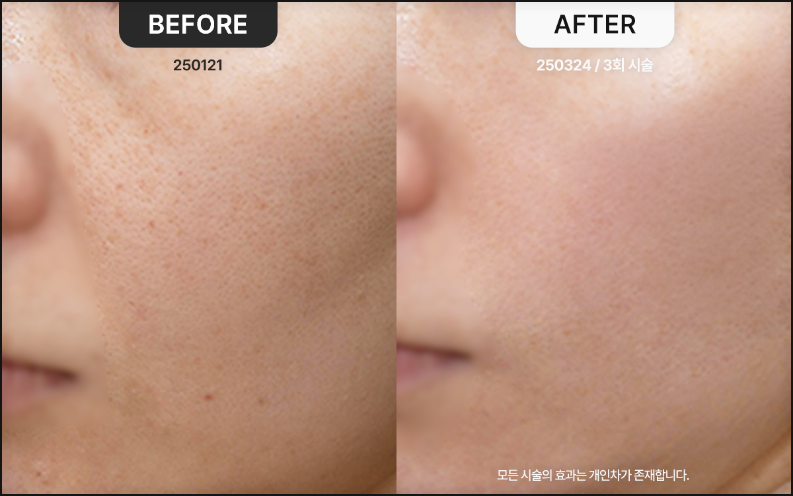
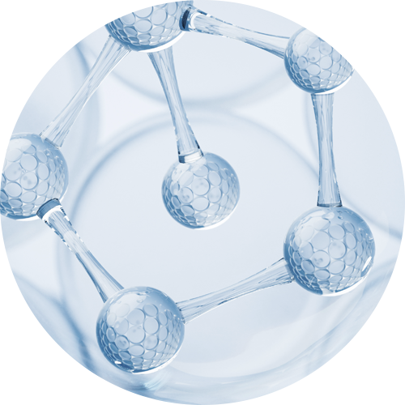
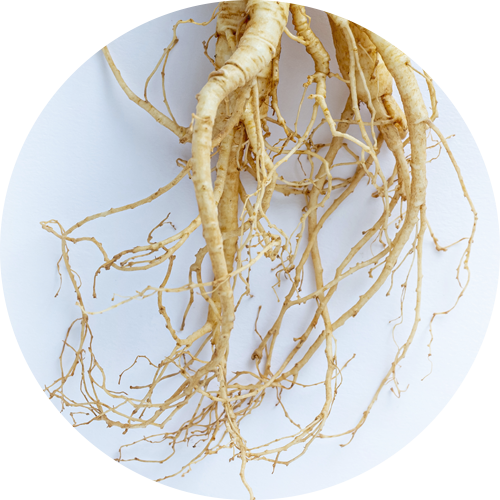
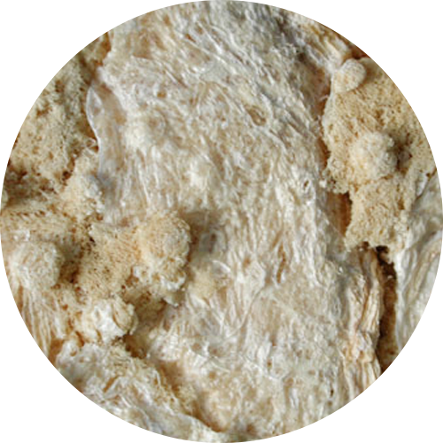
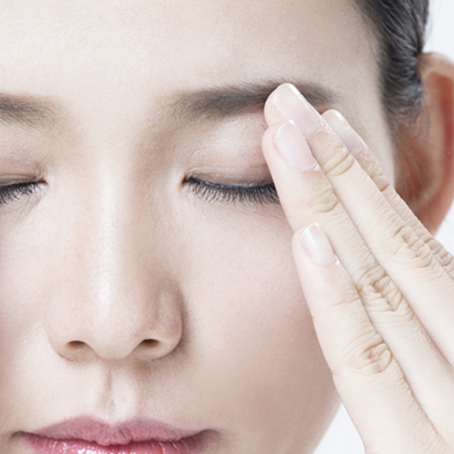
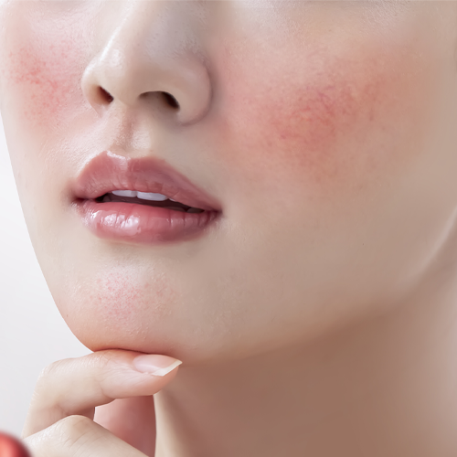
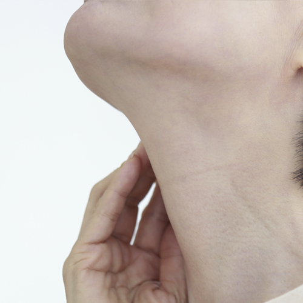

PN Rebuilder HPN Rebuilder Healer
Medical Bloom招牌项目：高端皮肤营养针 PN Rebuilder
专为改善老化与提升而设计的PN Rebuilder H。 恢复肌肤弹性的核心成分PN、具有强效抗氧化功效的黄芪， 以及为肌肤增添活力的紫河车相遇， 让松弛、失去生机的肌肤更加紧致、更显年轻。



令您的肌肤年轻紧致的
三大核心成分
PN（聚核苷酸） 深层渗透的肌肤再生与紧致强化核心 构成PN Rebuilder H根基的PN是源自三文鱼DNA的再生成分，帮助细胞在肌肤深层自我再生。
打造历久不失弹性的高密度肌肤，有效改善老化迹象。
PN促进胶原蛋白生成，强化肌肤结构，助力打造光滑而富有弹性的肌肤。
黄芪 抗氧化与弹性恢复的秘密 黄芪是数百年来传统韩方中沿用的强效抗氧化成分。它防止细胞老化，健康地保护肌肤，使其保持弹性状态。黄芪强大的抗氧化功效可保护肌肤免受各种外界刺激， 并帮助再生因老化受损的肌肤。
紫河车 为肌肤增添活力的天然成分 紫河车富含蛋白质与必需氨基酸， 为肌肤提供营养、提升弹性，并有助于淡化皱纹。
尤其能为松弛肌肤注入活力，高效打造光滑而充满生机的肌肤。

高端定制药针方案
：为弹性与提升而生的全方位护理
PDRN-PL + 黄芪 + 紫河车 PN Rebuilder H在PDRN-PL再生成分的基础上，加入黄芪与紫河车的营养， 为因老化与弹性下降而松弛的肌肤带来强效提升。
三大成分的和谐配合深入肌底， 打造弹润光滑的肌肤。
PN Rebuilder H带来的
肌肤蜕变
紧致提升的肌肤 提拉松弛、失去生机的肌肤， 打造饱满光滑的肌肤。
年轻高密度的肌肤 在肌肤深处诱导胶原蛋白生成， 令肌肤历久依然弹润致密。
修复老化损伤 凭借抗氧化成分的保护功效， 守护肌肤免受外界刺激与老化侵袭，保持健康状态。
稳定的水油平衡 调节肌肤水油平衡，维持弹润状态， 紧致护理松弛的毛孔。
PN Rebuilder H，
适合哪些人？
为肌肤松弛烦恼的人群 希望为肌肤增添提升效果 与弹性的人群 开始出现老化迹象的人群 希望预防初期老化、 提升肌肤密度的人群 希望重拾肌肤活力的人群 希望保持健康而有生机 的肌肤的人群 为毛孔粗大烦恼的人群 希望紧致毛孔、 改善肌肤结构的人群


添加您所需天然韩药材的
Medical Bloom韩医院的高端PN Rebuilder
PN Rebuilder Royal 以改善气色、赋予活力的成分组合，推荐给面色暗沉无光的人群。
麝香 凭借神经可塑性效应帮助细胞再生，为肌肤注入生机与活力。
PN Rebuilder Trouble 以抗炎作用见长的成分组合，推荐给需要护理泛红与痘痘问题的人群。
人参精萃（Rg3人参皂苷） 有助于保护肌肤、促进胶原蛋白再生，是缓解炎症性痘痘的卓越成分。
PN Rebuilder Healer 以强化肌肤再生为特点的成分组合，推荐给在意老化与松弛肌肤的人群。
黄芪 强效抗氧化，防止细胞老化，维持健康的肌肤结构。
紫河车 补充蛋白质与氨基酸，有助于提升肌肤弹性、改善皱纹。

为您呈现最健康的美丽——
Medical Bloom 韩医院的承诺
1:1肌肤状态与设计咨询
通过与院长的充分沟通，细致检查您的问题部位、肌肤状态与肤质特点。 综合考虑您所追求的美丽与面部状态，为您提出最合适的个人定制面部设计方案。
两位韩医院长的
特别专属管理
从咨询到治疗，我们把您的肌肤当作家人挚友的肌肤，以无微不至的细心与专注悉心呵护。 将韩医学视角融入肌肤美容，辅以血脉与肌肉的刺激，健康与美丽兼得。
无副作用的健康之美
我们把您的肌肤健康与满意度放在首位。 为了杜绝治疗后令人痛心的副作用，我们在检查与咨询环节力求万全，药针与韩药原料坚持只选用温和亲肤的天然韩药材。
正品高端仪器与
足量规范治疗
Medical Bloom 为顾客使用的所有仪器与药品均为正品，并按照您面部所需的定制剂量精准施治，不多也不少。